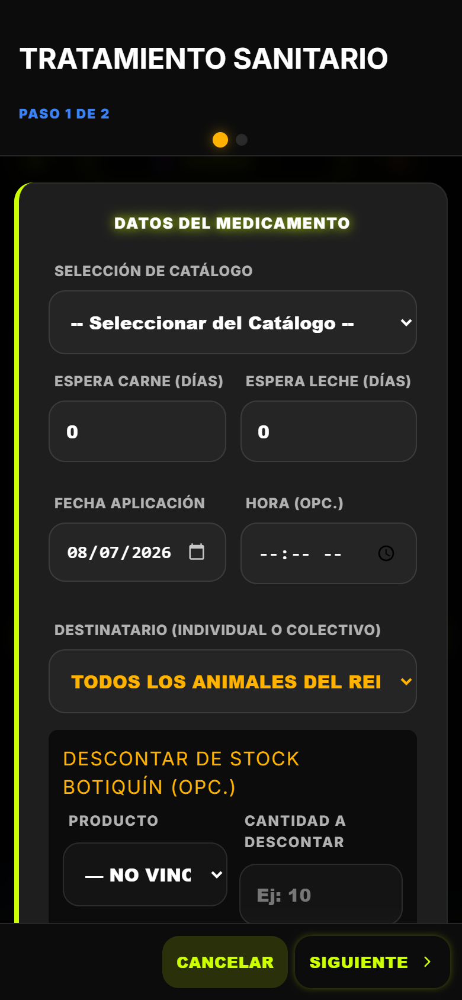
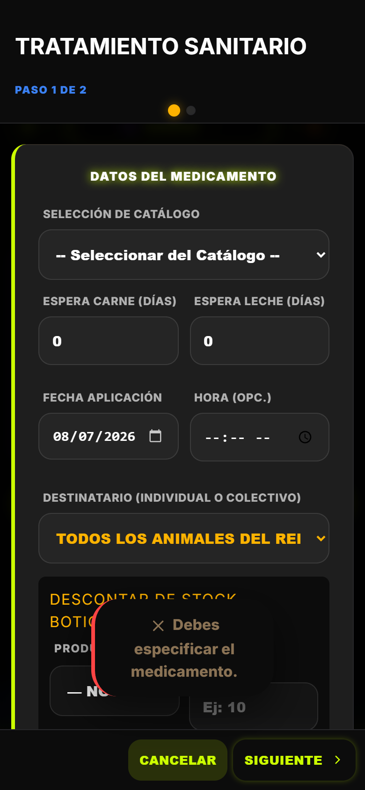
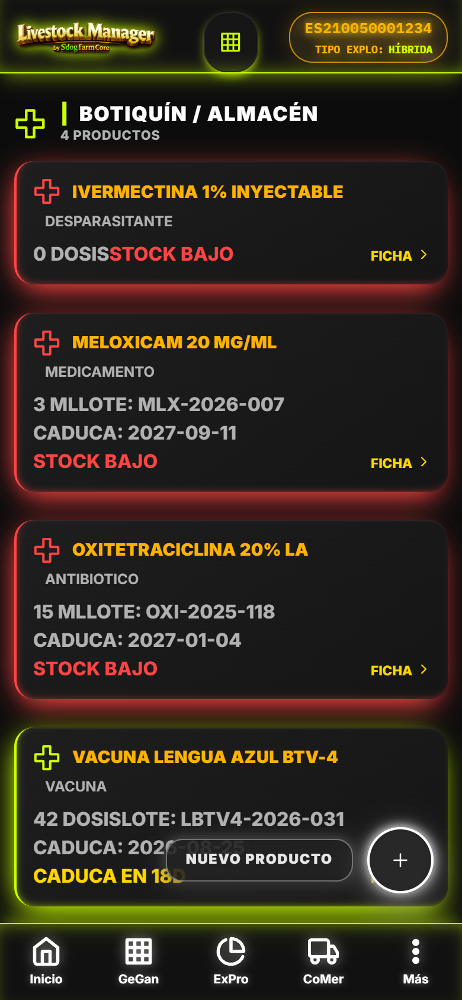
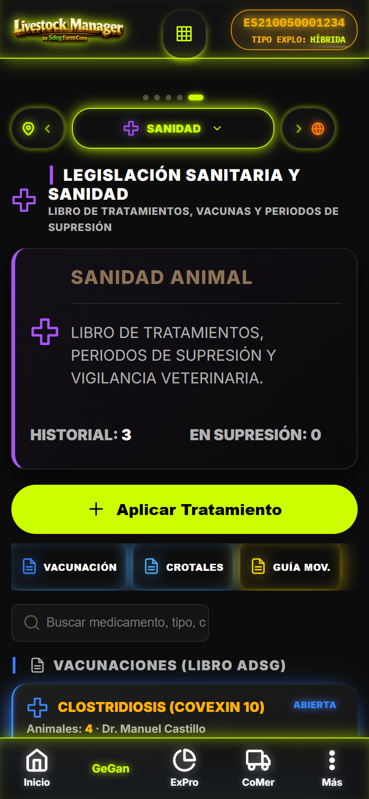

1. Vista Sanidad (Submodulo Ganaderia)
Acceso via carrusel Ganaderia #/ganaderia?sub=sanidad. Delegado a SanidadView. Header purpura. Vista unificada con tabs internos.
js/views/sanidad-view.js · window.SanidadView1.1 Tabs Internos SanidadView
| Tab | Contenido | Acciones |
|---|---|---|
| Tratamientos | Libro tratamientos filtrado (activos/historial), busqueda crotal, supresion | Nuevo Tratamiento (Wizard), Editar, Imprimir |
| Vacunaciones | Calendario vacunal, proximas revacunaciones, ADSG, lote | Nueva Vacunacion (Wizard), Editar |
| Botiquin | Inventario FEFO, alertas vencimiento <30d/precio, stock minimo | Entrada/Salida stock, Reposicion, Editar |
| Fitosanitarios | Registro aplicaciones, plazos seguridad, apto comercializacion | Nueva Aplicacion (Wizard Gasto), Editar |
| Saneamientos | Granular: TB, Brucelosis, Leucosis, Leucosis bovina, etc. Resultados, veterinario | Nuevo Saneamiento, Editar, Certificado |
1.2 Alertas Supresion SIEMPRE Visibles (Normativa Crítica)
- Regla: Las alertas de supresion sanitaria (carne y leche) NUNCA se ocultan, independientemente del flag de explotacion activo
- Leche (Rojo):
prohibidoLeche === true+diasRetiroLeche > 0= badge rojo "SUPPRESSION LECHE" - Carne (Verde Lima):
prohibidoCarne === true+diasRetiroCarne > 0= badge verde lima "SUPPRESSION CARNE" - Visibles en: Dashboard, AnimalesView (badge estado), SanidadView, Ficha animal, Wizard Venta Masiva (paso 1 bloquea), Albaran Leche (bloquea comercializacion)
- Suscripcion
EventBusactualiza en vivo al registrar nuevo tratamiento
2. Libro Tratamientos & Wizard Tratamiento (3 Pasos)
Cumple RD 787/2023, SIGGAN/BADIGEX. Registra en sanitarios + registro_eventos. Validaciones bloqueantes supresion.
2.1 Wizard Tratamiento — 3 Pasos
| Paso | Titulo | Campos | Validaciones |
|---|---|---|---|
| 1 | DATOS DEL TRATAMIENTO | Fecha (date), Animal/Rebaño (select), Producto (text), Principio activo (text), Lote medicamento (text, obligatorio), Via (select: IM/IV/SC/ORAL/TOPICAL/INTRAUTERINA), Dosis (text), Unidad (select), Veterinario prescriptor (text), Colegiado (text), NIF veterinario (text), Receta (text/numero) | Animal/Rebaño obligatorio, Producto obligatorio, Lote obligatorio, Veterinario + Colegiado obligatorios |
| 2 | TIEMPOS DE ESPERA (SIGGAN) | Dias retiro CARNE (number >=0), Dias retiro LECHE (number >=0). Auto-calculo supresion: fecha_fin = fecha + max(carne, leche) | Ambos >= 0. Si >0: prohibidoCarne/Leche = true automatico |
| 3 | CONFIRMACION | Resumen read-only con alerta supresion visible (rojo leche / verde lima carne) | - |

[CAPTURA] wizard-tratamiento-paso1.png Paso 1: Datos tratamiento con lote, via, veterinario, receta obligatorios
[CAPTURA] wizard-tratamiento-paso2.png Paso 2: Tiempos espera carne/leche con calculo supresion automatico2.2 Post-Tratamiento Automatico
- Guarda en
sanitarios(tipo 'tratamiento') +registro_eventostipo 'sanitario_tratamiento' - Actualiza animal:
prohibidoLeche,prohibidoCarne,fechaFinSupresionLeche,fechaFinSupresionCarne - Emite
EventBus'sanitario:creado' -> actualiza alertas Dashboard, AnimalesView, SanidadView en vivo - Valida comercializacion:
Sanitarios.verificarRetiroLeche(rebaño) +MotorTrazabilidad.checkSupresion(animal)
2.3 Filtros Libro Tratamientos
- Estado: Activos (en supresion) / Historial / Todos
- Busqueda: Crotal, producto, veterinario, lote
- Fecha rango: Desde/Hasta
- Tipo supresion: Leche / Carne / Ambos / Ninguna
3. Vacunaciones & Wizard Vacunacion (2 Pasos)
Calendario vacunal ADSG. Registra en sanitarios (tipo 'vacunacion') + registro_eventos. Proxima revacunacion auto-calculada.
3.1 Wizard Vacunacion — 2 Pasos
| Paso | Titulo | Campos | Validaciones |
|---|---|---|---|
| 1 | DATOS VACUNACION | Fecha, Tipo: Animal individual / Rebaño completo, Animal/Rebaño select, Vacuna (nombre comercial), Principio activo, Lote vacuna (obligatorio), Via, Dosis, Veterinario, Colegiado, NIF, Programa ADSG (select: oficial/voluntario), Observaciones | Fecha, Animal/Rebaño, Vacuna, Lote, Veterinario+Colegiado obligatorios |
| 2 | CALENDARIO | Proxima revacunacion (date, auto +365d o segun ficha tecnica), Recordatorio (checkbox 30d/15d/7d antes) | Proxima revacunacion >= fecha actual |
3.2 Vista Vacunaciones — Calendario & Alertas
- Lista agrupada por rebaño/animal con proxima revacunacion
- Badge estado: Al dia (verde), Proxima <30d (ambar), Vencida (rojo), Sin calendar (gris)
- Filtro: Programa ADSG (oficial/voluntario), rebaño, estado
- Exportacion CSV para cuaderno digital (seccion VACUNACIONES)
4. Botiquin — FEFO & Alertas Vencimiento
Inventario farmacos con metodo FEFO (First Expired, First Out). Alertas automaticas <30d. Gestión entradas/salidas stock.
4.1 Card Producto Botiquin (card-dark-gradient)
- Nombre comercial, Principio activo, Lote, Fecha caducidad
- Stock actual / Stock minimo (alerta si stock < minimo)
- Precio unidad, Valor total stock
- Badge vencimiento: Vigente > 90d (verde), 30-90d (ambar), <30d (rojo pulsing), Caducado (rojo fijo)
- Acciones: Entrada stock (+), Salida stock (-), Editar, Eliminar (solo si stock=0)

[CAPTURA] botiquin-lista-fefo.png Lista botiquin FEFO: lote, caducidad, stock, badges vencimiento rojo/ambar/verde4.2 Movimientos Stock Botiquin
- Entrada: Proveedor, factura, cantidad, precio, fecha caducidad, lote -> genera gasto categoria Sanidad
- Salida: Motivo (tratamiento/vacunacion/desperdicio), cantidad, animal/rebaño destino -> decrementa stock, vincula a sanitario
- Reporte FEFO: Ordenado por fecha caducidad ascendente. Prioriza uso lotes proximos a vencer
4.3 Alertas Botiquin en Dashboard
- Bento critico (rojo animado) si hay productos < 30d caducidad
- Contador en header SanidadView: "X productos por vencer"
- Notificacion push (si permisos) 30/15/7 dias antes
5. Fitosanitarios — RD 787/2023 & Plazos Seguridad
Registro aplicaciones fitosanitarias con control normativo obligatorio. Bloquea comercializacion si aptoComercializacion = NO. Integrado en Wizard Gasto categoria Fitosanitarios.
js/views/fitosanitarios-view.js · window.FitosanitariosView · Sub-tab ExPro carrusel5.1 Registro Aplicacion Fitosanitaria (via Wizard Gasto)
| Campo | Validacion |
|---|---|
| Parcela / Zona (select, obligatorio) | Requerido categoria Fitosanitarios |
| Producto comercial (text, obligatorio) | Registro oficial MAPA |
| Dosis aplicada (text, obligatorio) | Formato: cantidad + unidad (ej: 2 L/ha) |
| Plazo seguridad dias (number >=0, obligatorio) | Dias hasta apto comercializacion |
| Apto comercializacion (select: SI/NO, obligatorio) | SI = NO bloquea comercializacion zona/rebaño |
| Fecha aplicacion (date) | Default hoy |
| Operador aplicador (text) | Carnet aplicador |
| Observaciones | Opcional |
5.2 Control Normativo & Bloqueo Comercializacion
- Si
aptoComercializacion = NO-> zona/parcela en cuarentena - Bloquea rotacion pastos (ZonasView) mientras plazo seguridad > 0
- Bloquea venta animales (Wizard Venta Masiva paso 1 verifica
MotorTrazabilidad.checkSupresion+ fitosanitario zona) - Bloquea entrega leche (Albaran Leche Wizard verifica
Sanitarios.verificarRetiroLecherebaño) - Calculo automatico fecha fin plazo:
fechaAplicacion + plazoSeguridadDias
5.3 Vista Fitosanitarios — Lista & Alertas
- Tabla: Fecha, Parcela, Producto, Dosis, Plazo seguridad, Dias restantes, Apto (badge SI/NO), Operador
- Filtros: Zona, Estado (Cuarentena/Libre), Fecha rango
- Alerta Bento en ExPro principal si hay parcelas en cuarentena activa
- Export CSV cuaderno digital (seccion FITOSANITARIOS)
6. Saneamientos ADSG — Granular & Oficiales
Implementacion granular completa (PR #66): TB, Brucelosis, Leucosis bovina, Leucosis, Rinotraqueitis, etc. Cada tipo con protocolo especifico y certificado oficial.
6.1 Tipos Saneamiento Implementados
| Tipo | Codigo | Frecuencia | Animales | Certificado |
|---|---|---|---|---|
| Tuberculosis (TB) | TB | Anual / Cada 6 meses (alto riesgo) | Bovino > 6 meses | Certificado TB oficial ADSG |
| Brucelosis | BRU | Anual | Bovino/Ovino/Caprino > 6m/18m | Certificado Brucelosis oficial |
| Leucosis Bovina | LEUCO_BOV | Anual | Bovino > 24 meses | Certificado Leucosis oficial |
| Leucosis (general) | LEUCO | Segun programa | Segun especie | Certificado oficial |
| Rinotraqueitis (IBR) | IBR | Segun programa CCAA | Bovino | Certificado IBR |
| Paratuberculosis | PARA_TB | Segun programa | Bovino/Ovino/Caprino | Certificado Paratuberculosis |
| Otros (programa ADSG) | OTRO | Personalizado | Configurable | Certificado ADSG |
6.2 Wizard Saneamiento (2 Pasos)
| Paso | Titulo | Campos |
|---|---|---|
| 1 | DATOS SANEAMIENTO | Fecha, Tipo (select 7 tipos), Rebaño (select obligatorio), Veterinario ADSG (autocompleta), Colegiado, NIF, Animales muestreados (numero / lista crotales), Metodo diagnostico |
| 2 | RESULTADO & CERTIFICADO | Resultado: NEGATIVO / POSITIVO / INCONCLUSO. Numero certificado oficial, Fecha emision, Validez (dias), Observaciones. Si POSITIVO -> alerta Dashboard + restriccion movimientos |
6.3 Integracion SIGGAN/BADIGEX
- Certificado oficial valido para Guia 365 dias (Andalucia: indemne/calificada = auto-autorizacion)
- Calificacion sanitaria finca: Indemne / Calificada / No cualificada / Oficialmente libre
- Export CSV cuaderno digital (seccion SANEAMIENTOS)
- Timeline en finca: Historial saneamientos con resultados y vencimientos
7. Reproducción — Celos, IAs, Diagnosticos, Partos
Gestion completa ciclo reproductivo. Vinculacion madre-cria automatica al parto. KPIs: Tasa IA, Tasa preñez, Intervalo celo-parto, Partos/mes.
7.1 Tipos Evento Reproductivo
| Evento | Campos Clave | Auto-Acciones |
|---|---|---|
| Celo | Fecha, Animal, Intensidad (leve/moderado/intenso), Observador | Sugiere IA en ventana optima (12-18h post-celo) |
| Inseminacion (IA) | Fecha, Animal, Toro (crotal/nombre/dosis), Tipo semen (convencional/sexado), Tecnico, Dosis | Calcula diagnostico optimo (28-35d), parto estimado (283d bovino) |
| Monta Natural | Fecha, Animal, Toro (crotal), Observador | Igual que IA para diagnostico/parto |
| Diagnostico | Fecha, Animal, Metodo (ecografia/palpacion/analisis leche), Resultado (PREÑADA/VACIA/REABSORCION), Dias gestacion, Tecnico | Si PREÑADA: calcula fecha parto estimada, alerta secado (60d antes) |
| Parto | Fecha, Madre, Cria (crotal nuevo), Sexo, Vitalidad (vivo/muerto/debil), Peso nacimiento, Tipo parto (normal/asistido/cesarea), Complicaciones | Crea animal hijo automatico, vinculacion madre-cria, actualiza estado madre, genera evento nacimiento |
| Aborto | Fecha, Madre, Dias gestacion, Causa (si conocida), Veterinario | Actualiza estado reproductivo madre, alerta sanitaria |
| Secado | Fecha, Animal, Fecha parto estimada, Tratamiento secado (producto/lote) | Alerta inhibidores leche (supresion leche automatica) |
7.2 Wizard Parto — Vinculacion Madre-Cria
- Paso 1: Madre (selector hembras preñadas), Fecha, Tipo parto, Complicaciones
- Paso 2: Cria(s) — permite partos multiples. Por cada cria: Sexo, Vitalidad, Peso, Crotal (generado/manual)
- Auto: Crea animal en
animalescon madre_id, rebaño madre, zona madre, fecha nacimiento, origen 'Nacimiento' - Auto: Registra evento
registro_eventostipo 'nacimiento' +sanitariossi hay tratamiento cria

[CAPTURA] wizard-parto-paso2.png Paso 2: Cria(s) con crotal auto-generado, sexo, vitalidad, peso7.3 KPIs Reproductivos (Card-registro toggle)
- Tasa IA % = IAs / Celos detectados (verde >60%, ambar 40-60%, rojo <40%)
- Tasa Preñez % = Preñadas / (IAs + Montas) (verde >55%, ambar 35-55%, rojo <35%)
- Intervalo Celo-Parto dias (verde <90, ambar 90-120, rojo >120)
- Partos / Mes (tendencia 6 meses)
- Mortalidad perinatal % = Muertos al parto / Total nacidos (verde <5%, ambar 5-10%, rojo >10%)
8. Bitacora Animal & Margen Neto por Animal
Timeline 360° en ficha animal (edicion). Margen economico calculado: MargenAnimal.calcular(animalId).
8.1 Bitacora Animal (Solo Edicion Ficha)
- Timeline cronologico unificado: Pesajes, Ordeños, Tratamientos, Vacunaciones, Diagnosticos, Partos, Movimientos, Gastos imputados
- Filtros por tipo, fecha rango, rebaño
- Enlaces directos a registro origen (editar tratamientos, ver albaran, etc.)
- Companeros de lote: Animales que comparten rebaño/fecha con eventos comunes
8.2 Margen Neto por Animal
| Componente | Calculo | Fuente |
|---|---|---|
| Coste Compra | Precio compra + gastos compra (transporte, comision) | Ficha animal: precio_compra, gasto_compra |
| Coste Sanidad | Suma tratamientos + vacunaciones imputados al animal | sanitarios.tipo='tratamiento/vacunacion' + animal_id |
| Coste Alimentacion | Consumo silos imputado a rebaño/periodo + gastos alimentacion directos | registro_eventos silo_consumo + gastos categoria Alimentacion |
| Ingreso Leche | Suma entregas leche imputadas al animal (Control Lechero / ordeños) | produccion_leche + balance_lacteo entrada |
| Ingreso Venta | Precio venta (comercializacion_carne) si animal vendido | comercializacion_carne + liquidacion |
| MARGEN NETO | Ingreso Leche + Ingreso Venta - (Compra + Sanidad + Alimentacion) | MargenAnimal.calcular() |
Colores: Positivo = verde (success), Negativo = rojo (danger), Neutro = slate.
9. Datos Demo CHAMORRO — Sanidad & Reproduccion
Validacion guias PWA: GeGan 36/38 (Sanidad 7/8, Reproduccion 5/6 sub-tabs cubiertos).
9.1 Precarga Relevante
9.2 Pruebas Clave en Demo
- Wizard Tratamiento -> verifica alertas supresion en Dashboard/Animales/Sanidad en vivo (EventBus)
- Wizard Venta Masiva paso 1 -> bloquea animales en supresion carne (verde lima) y leche (rojo)
- Albaran Leche Wizard -> bloquea rebaño con supresion leche activa
- Wizard Gasto Fitosanitario apto=NO -> bloquea rotacion zona + venta animales zona
- Wizard Parto -> crea animal hijo auto, vinculacion madre_id, evento nacimiento
- Botiquin FEFO -> alertas vencimiento <30d en Dashboard Bento + header Sanidad
- Saneamientos -> certificados vigentes -> Guia 365 auto-autorizada (finca indemne)